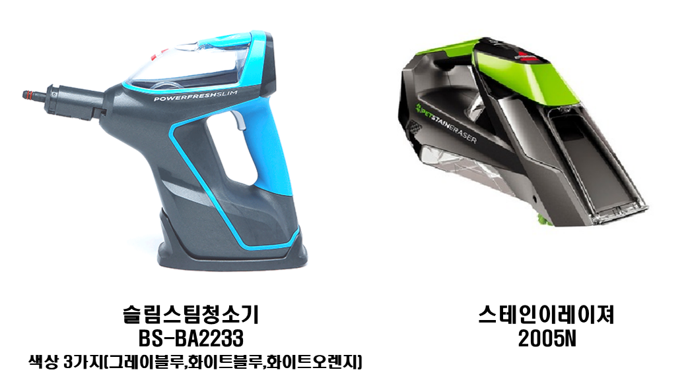

비쎌스팀청소기 A/S 접수 약관 동의
·A/S 약관 제 1 조 (수리 기준 및 절차) ㈜빅에이스 (이하 “빅에이스"로 함) 는 소비자(이하 "고객"으로함)께서 의뢰한 제품 수리에 본 규정대로 수리를 진행합니다. A/S는 택배수거로 진행되며 방문A/S 및 출장 A/S는 지원하지 않습니다. ※ A/S 절차 ① A/S 접수 ② 택배사 제품방문수거 ③ 입고 및 검수 ④ 비용안내 및 증상안내(유상A/S의 경우) ⑤ 수리 ⑥ 입금확인(유상A/S의 경우) ⑦ 포장 및 출고 제 2 조 (품질보증기간) ① 빅에이스는 소비자 피해 보상규정을 근거로 하여 무상보증 기간을 정하며. 제품의 품질보증기간은 구매 후 1년입니다. 품질보증기간은 고객의 구입일자를 기준으로하며, 제품 구입일자 확인은 구매영수증(세금계산서,카드영수증) 또는 해당 구매처의 구매정보를 통하여 확인합니다. 확인 되지 않을 경우 품질보증기간은 적용되지 않습니다. ② 빅에이스는 고객의 개인정보 보호를 위하여 각 구매처에 고객의 구매정보를 요청할 수 없습니다. ③ 빅에이스는 구매일로부터 고객이 1달이내의 정상적인 제품 사용 중 발생하는 제품 고장에 대하여 고객의 요청시 제품의 교환 및 반품을 해줄 의무가 있습니다. 이 기간의 경우 접수일을 기준으로 합니다. 제 3 조 (보증기간내의 수리) 보증기간내 사용설명서 및 안내서 등의 따라 정상적인 사용을 한 상태에서 발생된 고장에 대하여, 무상 A/S를 실시하며 발생되는 부품비,배송비,수리비는 빅에이스가 모두 부담합니다. 다음 항목 중 어느쪽에 해당하는 경우에는 유상 수리가 진행됩니다. ① 천재지변(화재,지진,수해등) 또는 지정 외 전원사용으로 인한 고장 · 손상의 경우 ② 사용상의 잘못 (낙하, 이물유입, 보관상 부주의 등)으로 인한 고장 · 손상의 경우 ③ 소모품(노즐,패드,연장봉)의 마모,소모,열화,파손으로 사용이 불가능할 경우 ④ 빅에이스 외의 다른 업체에서 수리 되거나, 튜닝, 고객이 직접 제품 해체를 시도한 흔적이 확인 될 경우 ⑤ 양도된 제품이거나, 중고로 구매한 제품의 경우 ⑤ 구매정보 확인이 안 될 경우 ⑥ 보증기간내 증상이 발생하여도 접수일이 보증기간을 지난 경우 제 4 조 (보증기간외의 수리) 보증기간외의 수리의 경우 발생되는 왕복배송비,공임비,부품비를 고객이 전부 부담합니다. 물품등을 유상으로 수리한 경우 그 유상으로 수리한 날부터 2개월 이내에 소비자가 정상적으로 물품등을 사용하는 과정에서 그 수리한 부분에 종전과 동일한 고장이 재발한 경우에는 무상으로 수리합니다. 다음의 각 항 중 어느 하나에 해당하는 경우는, 수리 요금 외에 별도의 요금이 발생하는 것으로 합니다. ① 제품의 고장이 아닌 단순 사용방법 숙지 미숙으로 접수된 경우 배송비와 기본점검비가 발생합니다. ② 고객이 의뢰한 증상이 확인되지 않을경우, 또는 증상이 재현되지 않을 경우 배송비와 기본점검비가 발생됩니다. ③ 고객이 수리를 진행 하지 않으며, 이를 반송 요청을 할 경우 고객이 배송비를 부담합니다. 제 5 조 (제품의 보관) 제품의 보관일은 보관지정일로 부터 30일이며 고객의 회답이 없거나 보관일 연장의사를 표하지 않으면 제품은 자동 폐기처분 됩니다. 고객이 제품을 받을 수 있는 상황이 아닐 경우, 특정 사유로 빅에이스에게 요청하여 제품 보관일을 연장할 수 있습니다. 1회 연장시마다 30일까지 연장할 수 있으며 최대 90일까지 보관 할 수 있습니다. 보관지정일은 다음 항목중 어느 하나에 해당되는 경우 확정됩니다. ① 유상 A/S 진행 후 비용 및 증상안내시 유선연락 및 문자로 안내하였지만 고객의 회답이 없을경우 해당 최초 문자 발송일로 부터 보관일 산정 ② 유상 A/S 진행 후 비용 입금이 안될 경우 최초 비용 안내일로 부터 보관일 산정 ③ 고객의 제품 수령지가 변경될 경우 이를 빅에이스에게 알리지 않으며 회답이 없거나 수령의사가 없을 경우 A/S 완료일로 부터 보관일 산정 제 6 조 (수리비용의 산정 및 지불) 수리 비용은 제품의 왕복 운송비,공임비,부품비가 포함되며 비용 입금은 계좌이체로 진행됩니다. 비용 안내 후 30일이 지나도 고객의 회답이 없는 경우 고객이 수리를 취소한 것으로 간주합니다. 비용 입금 후 고객은 빅에이스에게 수리 비용에 대한 현금 영수증 또는 세금계산서 발행을 요청 할 수 있습니다. 제 7 조 (사후관리) 빅에이스는 수리 진행한 제품을 수리 완료일로 부터 3개월 이내에 하자가 발생 하였을 경우, 문제해결을 위한 수리를 재차 실시합니다. 덧붙여 여기서 말하는 하자란, 해당 수리를 실시한 개소의 장애에 의해 재차 수리가 필요한 경우를 말하며, 3개월 이후 접수 시는 무상 수리가 적용되지 않습니다. 빅에이스는 상기의 수리를 반복해 실시했음에도 불구하고, 하자가 수리되지 않을 경우에 합리적인 범위에서 상위 부속의 교환 등의 처리를 통해 처리합니다.
A/S 약관에 대한 동의(필수)
·개인정보 수집 동의 정보통신망법 규정에 따라 ㈜빅에이스 (이하 “빅에이스"로 함) 는 소비자(이하 "고객"으로함)의 개인정보의 수집 및 이용목적,수집하려는 개인정보의 항목, 개인정보의 보유 및 이용기간을 안내 드리오니 자세히 읽은 후 동의하여 주시기 바랍니다. 1. 개인정보의 수집ㆍ이용 목적 - A/S 서비스 제공에 필요한 최소한의 고객정보 수집 2. 수집하려는 개인정보의 항목 - 제품 택배 수거에 필요한 고객의 성함,주소,연락처 - 무상 A/S 확인에 필요한 고객의 구매정보(구매처,구매일,주문번호) - 사후 관리를 위한 제품의 일련번호(serial number)와 수리 이력 3. 개인정보의 보유 및 이용 기간 - A/S 진행시 : A/S처리일로 부터 1년이내 - A/S 접수 후 취소시 : 취소후 즉시 삭제 4. 정보 수집의 거부 및 이에 따른 불혜택 - 고객은 개인정보 수집을 거부 할 수 있으며, 거부시 A/S 서비스를 제공 받지 못함. - 고객은 A/S 처리 후 개인정보 파기를 요청 할 수 있으며, 파기시 A/S 이력 또한 삭제되며 추가 고장에 의한 사후관리를 포기하는것으로 간주함.
개인정보 수집 및 이용에 대한 안내(필수)

위 이미지 외의 다른 모델(BA2234,다른 비쎌모델)의 경우 A/S가
불가능하며 해당 구매처를 통하여 A/S 접수해주시길 바랍니다.
접수 모델 확인(필수)
A/S 약관, 개인정보 수집 및 이용,제품 모델 확인에 모두 동의합니다.
돌아가기